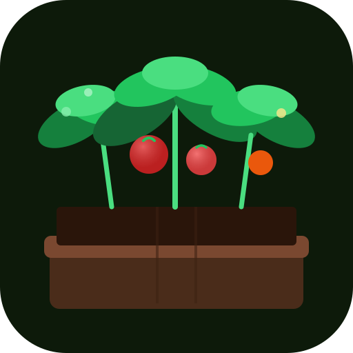

Zones
ColdestWarmest
Loading zone data…

Organized AbundanceLoading zone data…
Search your address or tap Locate me to find your hardiness zone and get a personalised planting calendar for every month of the year.
We'll tailor starter crop suggestions to match your confidence in the garden.
Choose 3 or more crops to add to My Garden and kick off your growing season.
Enable notifications to be alerted when crops are ready to harvest and when frost is forecast for your tender plants.
Click a bed or structure to edit